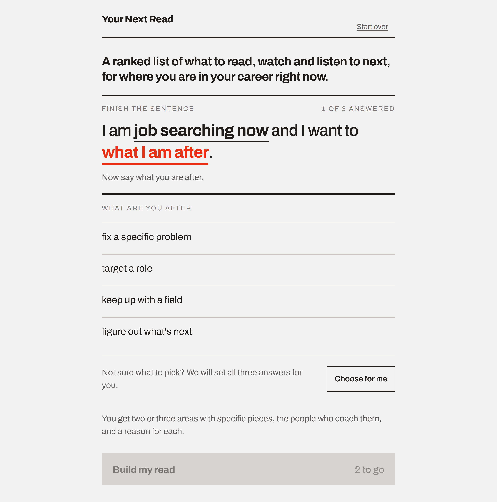
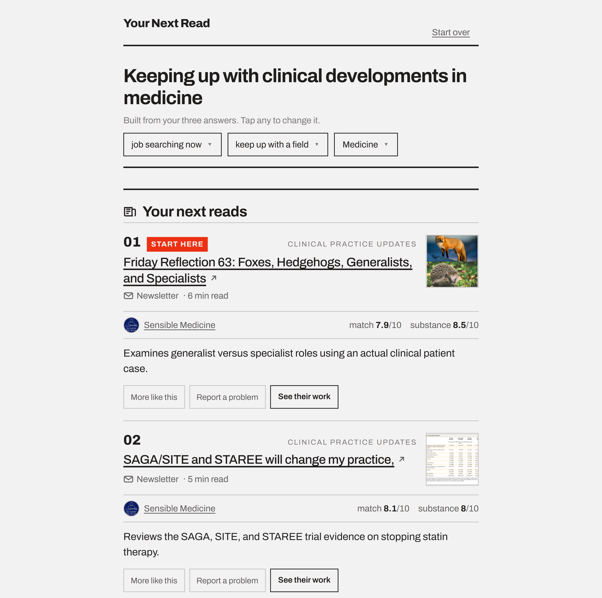

Say where you are and what you are after. Get back a short, ranked set of specific things to read, watch or listen to next, drawn from across every platform, with a reason attached to each.
Learning anything as an adult means assembling your own curriculum. The material is out there, scattered across platforms that each recommend only their own inventory, and each optimising for your next session rather than your next step.
So you assemble it yourself, badly. You search, which requires the vocabulary before you can query it, and returns pages about a topic rather than an answer to a situation. You follow people, which gets you everything they publish rather than the one thing that helps. You let a feed guess, and it guesses from what you clicked, because there is no field anywhere to state a goal out loud.
Career learning is where that costs the most, because the goals are sharp and the deadlines are real. Three weeks from a product interview and freezing on metrics questions is a precise problem with a precise answer somewhere, and nothing indexes by the one thing you actually have, which is an intent.
That is the gap: unified access by intent. One place to describe your situation in your own words and get a small, ordered answer rather than an endless surface to browse.
The input is a sentence you finish in three taps. Where you are, what you are after, and the specific thing. "I am job searching now and I am stuck on not getting screens." Six situations, each offering the intents that make sense for it, and a final blank that is either a short list or a search over the topics the library genuinely covers.
Behind it sit two halves that never run in the same place. Overnight, a pipeline reads a curated set of public sources, works out what each new piece is about, who it is pitched at and whether it has substance, and packs the result into one compact bundle. The live site loads that bundle into memory and spends one model call per visit turning the best candidates into two or three named areas, each with a match score and a one-line reason that has to point at something in the piece itself.

The library is a curated sample, not an index of the field. It covers product, engineering, recruiting, design, data, finance, sales, marketing, operations, people leadership, and more recently medicine, law and research, and it says "not covered yet" rather than guessing when a question falls outside that.
Recommend pieces, not people. Following someone is a proxy for what you actually want. Even an excellent creator posts filler most weeks, so a list of names leaves you exactly where you started. Ranking individual items is harder, and it is the entire value. Creators surface because their work was picked, which is a more earned follow than a quiz result.
Every format in one ranking. The gap is cross-platform by definition, so articles, newsletters, video, podcasts and books are ranked together and only split apart for display. No platform will ever do this, because each one is a retention tool for its own inventory.
A score you can interrogate. Each piece carries a match score out of ten and a substance score, and the reason under it has to name something specific in the piece. A percentage nobody can question is decoration, and it was the first thing I wanted to avoid building.
A thin answer says so. Where the library has one good piece for an area, the brief shows one and says more is coming. Padding to a fixed count is what you do when you cannot admit a gap, and it is the fastest way to make every other score on the page untrustworthy.
Tell people what to skip. An optional reads section names things that are widely shared and wrong for this particular person, with the mismatch stated. No engagement-optimised feed will ever do that, which is exactly why it is worth having.
Collect nothing, and stay inside the rules. No account, no sign-in, no history, no IP address stored. Profiles on networks that forbid automated access are never fetched, and a site telling us not to read something is respected rather than worked around. One feature was rebuilt against a different provider mid-build for precisely that reason.

The library only understood one profession's career ladder. Every piece is labelled by who it is pitched at: someone starting out, someone established, or someone running things. When I widened the library into medicine, law and research, almost nothing came back labelled as entry level. A hand check found nine in ten wrongly labelled, all failing the same way: the rule had been written in the vocabulary of one industry, so medical school and law school did not register as the start of a career at all. The fix was to state the principle rather than the examples. Entering any profession counts as a first role, whatever the route in is called.
Two of the three personalisation controls did nothing. Adding your years of experience reordered a shortlist that had already been chosen without knowing your level. It looked personalised and changed almost nothing until it was rewired to search again at the right level. A second control was used once in 167 sessions and was deleted rather than fixed.
Variety was cheaper to fake than to buy. Keeping repeat visits fresh by generating several different answers per question would have cost real money every month. Measured, the answers overlapped more than four fifths of the time and often differed only in the wording of a heading. What shipped instead rotates which piece leads and reshuffles the close calls, at a fraction of the cost.
Speed was somebody else's problem. Briefs were taking fifteen to twenty-five seconds and my first two theories were both wrong. Measurement showed the delay was not in our code at all but in which route the request happened to take, splitting cleanly into fast and very slow with almost nothing in between. Pinning the route, and dropping a check that had been rejecting one answer in five and making it start over, cut the typical wait by three quarters and removed the slow group entirely.
The pattern across all four: every instinct I had about what was wrong was wrong, and measuring took an hour each time.
Fix coverage before ranking. The first working version had roughly twenty sources and could not answer a search for a role outside the handful they covered. The ranking was fine; the library could not answer the question. A recommender at this scale is mostly a curation problem wearing an algorithm costume, and I spent the first week on the costume.
Write each rule once, where it is enforced. One check demanded the exact wording another instruction forbade, so two fifths of failures were self-inflicted, and the tests had frozen the old rule and were defending the wrong behaviour. Rules now live in one place and the code reads them from there.
Verify from the outside. Three faults reached the live site having passed every test, because the files they needed existed on my laptop and nowhere else. One of them would have quietly served stale answers forever. The check that caught them was running the real thing with my local data moved out of the way, and it should have been the first thing I built.
Treat constraints as a position. Never fetching profiles, collecting nothing about the reader, refusing to work around a site's own rules: each closed a door, and together they are most of what makes the product defensible to describe.
Built with agentic coding from a written spec and a rules file. The product decisions, the source curation and the judgment calls are mine.